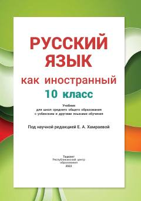

РЯ10-sinflar uchun rus tili chet tili sifatida darsligi.
Ushbu darslik o'zbek va boshqa ta'lim tillaridagi maktablarning 10-sinf o'quvchilari uchun rus tilini chet tili sifatida o'rganishga mo'ljallangan. Kitobda o'qish, gapirish, tinglash va yozish kabi nutqiy faoliyat turlari ustidan tizimli ravishda ishlash ko'zda tutilgan bo'lib, B1+ darajasidagi talablarga javob beradi.